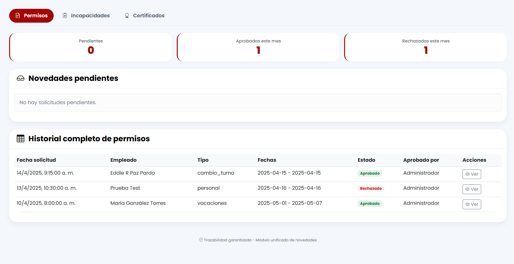
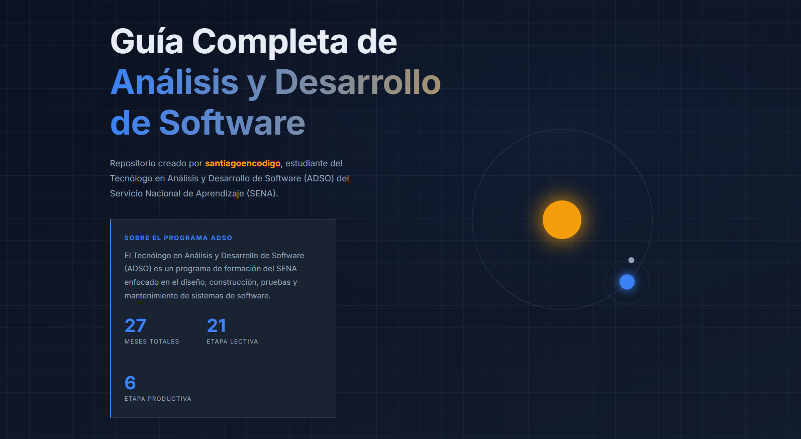
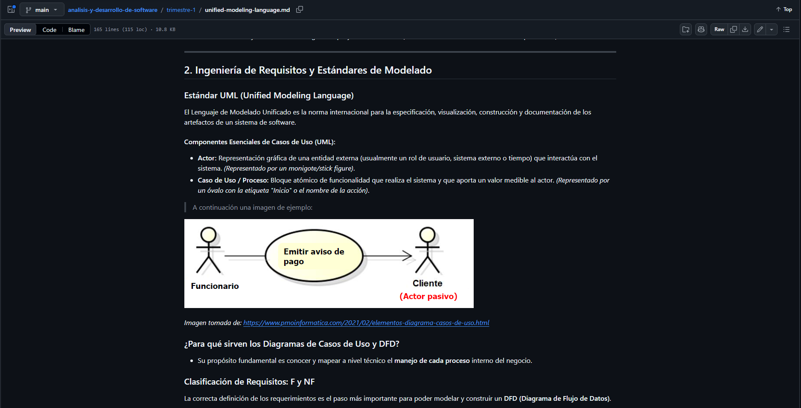
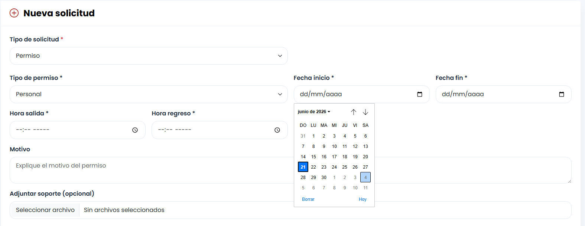
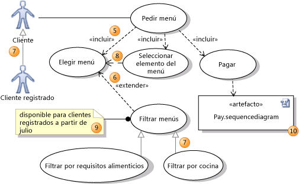
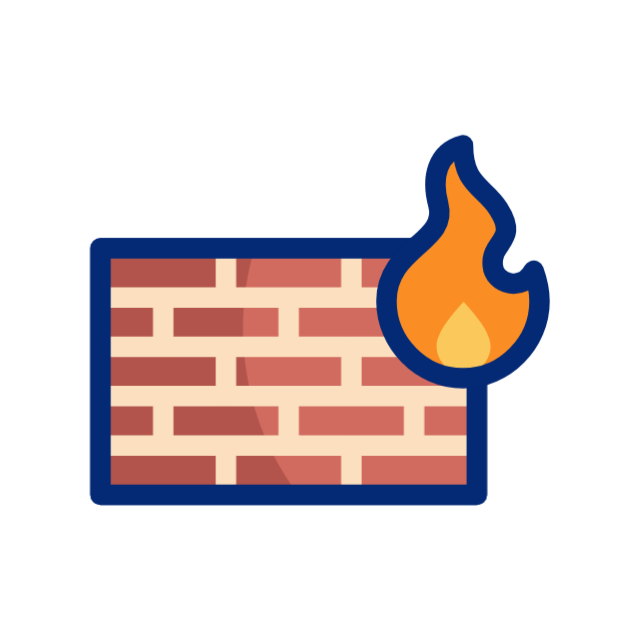

As a software developer, planning your sprint, your learning path, and your career milestones is essential. This 3-part roadmap outlines my professional future using accurate grammatical structures.
PART 1: The Immediate Sprint
Fixed appointments and tasks scheduled for the next few days.
Thursday Deployment
This Thursday, I am presenting the bug-free backend of the 'Novedades' module to my instructor. I am showing the fixes for the mistakes I had last time to ensure everything runs smoothly.

Repository Refactoring
This Sunday, I am refactoring the design of the index.html file in my ADSO repository, where I take notes on the technologist program. During this session, I am updating the SEO attributes, changing the color palette, and reviewing the existing sections.

UML & Business Review
This Sunday night, I am documenting and reviewing the first topics we covered in ADSO. I am updating information regarding business rules, DFDs (Data Flow Diagrams), use case diagrams, and other UML concepts.

PART 2: The Next Milestones
Solid decisions and intentions planned for later in my training.
Advanced Core Logic
Next month, we are going to review the business rules applied to the backend, frontend, and the core logic of our software development. For instance, in our project modules like 'Horarios' or 'Permisos', we have time constraints; a user cannot request permission for a past date or a year in advance. Things like that show the importance of reviewing business rules.

Requirements Auditing
Next trimester, we are going to review the requirements of our program. Many things change once we start coding, so we are going to check if our development takes into account all original specifications, or if we need to modify some requirements and modules.

Software Security Integration
Next trimester, we are going to learn more about software security, which is a critical step before deploying a program. We are going to study how it relates to forms, database connections, and secure data exchange. It is going to be really interesting!

PART 3: Tech Predictions & Possibilities
Long-term projections and technological probabilities for the distant future.
Academia & Higher Education
In three years, I will probably finish my Systems Engineering degree. For now, I have not decided which university I will choose, but I have three options: Areandina, Politécnico, or UNAD. I think I will study online because it is more probable that I won't choose an on-campus modality. I want to have more time for a job and focus on learning in front of my computer.
Professional Goal
In five years, I will probably work as a remote Full-Stack Developer. I would love to have a remote job. It will be great because I won't have to cross the city to go to work or spend time on public transportation. Currently, I am learning the tech stack and the skills needed to achieve this goal.
Industry Projections
In five years, maybe AI will be the most common tool in everyday life and in every job. Everybody will have to work with AI or live with smart devices, like Meta glasses or the Internet of Things (IoT). I think we will probably see robots working like humans.